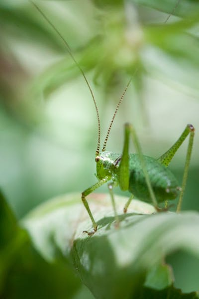
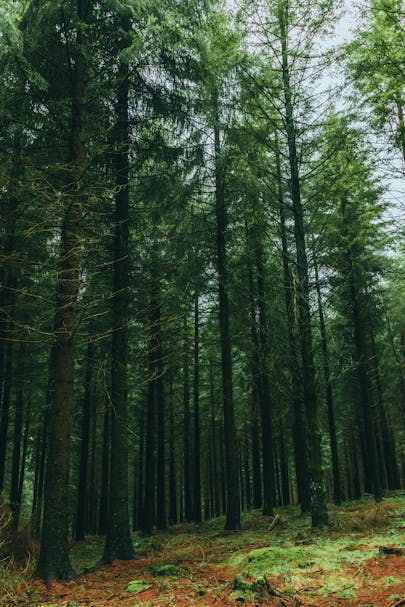
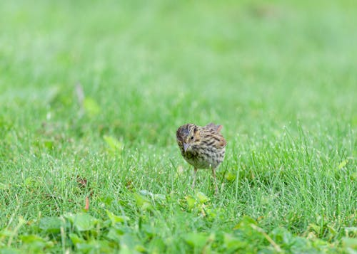
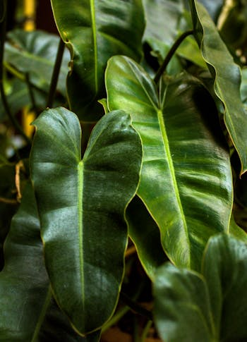
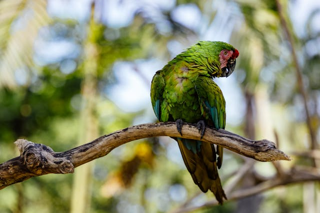

Página Verde
Bem vindo à página verde, espero que tenha conseguido chegar aqui em sua primeira tentativa (ou não). Sem mais delongas, vamos às curiosidades
Curiosidades - Verde
- A cor verde é uma cor primária (das 3 RGB);
- No Antigo Egito, o verde era associado à regeneração e renascimento;
- É raramente encontrada na coloração dos olhos humanos, presente apenas em aproximadamente 2% da população mundial;





- No Marketing e Design, é um cor frequentemente associada ao meio ambiente, sorte, relaxamento e inveja;
- Cerca de 16% dos homens consideram a cor verde como sua favorita, enquanto mulheres, 15%
Pronto para seguir?
Espero ter mais sorte dessa vez!